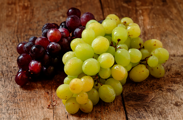
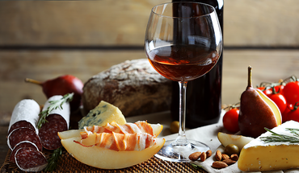

<section class="blog">
  <div class="blog__container">
    <h2 class="blog__title">
      
      <span>World of Wines</span>
    </h2>

    <p class="blog__description">
      Read our articles if you want to know more about wine production and selection.
    </p>

    <ul class="blog__list">
      <li class="blog__item">
        
        <time class="blog__date" datetime="2022-02-05">5 Feb 2022</time>
        <h3 class="blog__item-title">How Is Wine Rated?</h3>
        <p class="blog__item-text">
          Awards are the most important aspect for wines. If experts rate a particular wine highly,
          then it indicates that the production te...
        </p>
      </li>

      <li class="blog__item">
        
        <time class="blog__date" datetime="2022-02-01">1 Feb 2022</time>
        <h3 class="blog__item-title">Grapes for Winemaking</h3>
        <p class="blog__item-text">
          The most important thing in wine production is the quality of the grapes. Without this, it is
          impossible to make good wine. Theref...
        </p>
      </li>

      <li class="blog__item">
        
        <time class="blog__date" datetime="2022-01-26">26 Jan 2022</time>
        <h3 class="blog__item-title">Wine Snacks</h3>
        <p class="blog__item-text">
          Drinking wine is a whole art. However, to not spoil the taste, you need to select snacks
          carefully. It should be noted that differ...
        </p>
      </li>
    </ul>
  </div>
</section>